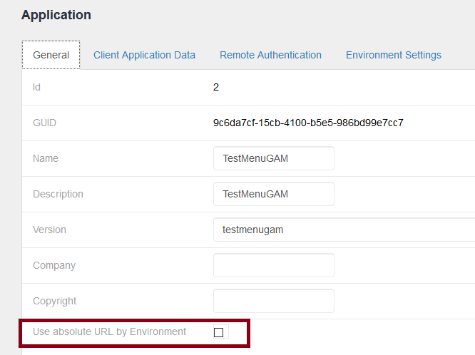

Use the following API to get, create, and update GAM Menus:
|
&GAMApplication.GetMenus(&MenuFilter, &Errors) //&Errors is GAMError collection, &MenuFilter is GAMApplicationMenuFilter data type |
|
&GAMApplication.GetMenu(&MenuId, &Errors) |
|
&GAMApplication.GetSubMenus(&MenuId, &Errors) |
|
&GAMApplication.AddMenu(&Menu,&Errors) //&Menu is GAMApplicationMenu |
|
&GAMApplication.UpdateMenu(&Menu,&Errors) |
|
&GAMApplication.DeleteMenu(&Menu,&Errors) |
|
&GAMApplication.AddMenuOption(&MenuId, &MenuOption, &Errors) //&MenuOption is GAMApplicationMenuOption data type |
|
&GAMApplication.UpdateMenuOption(&MenuId, &MenuOption, &Errors) |
|
&GAMApplication.DeleteMenuOption(&MenuId, &MenuOption, &Errors) |
|
&GAMApplication.GetMenuOptions(&MenuId, &MenuOptionFilter, &Errors) //&MenuOptionFilter is GAMApplicationMenuOptionFilter data type |
|
|
&GAMApplication.GetMenuOption(&MenuId, &MenuOptionId, &Errors) |
|
|
&GAMApplication.GetPermissionResources(&PermissionFilter, &Errors) |
Returns all the GAM Application permissions that have an associated resource. |
|
&GAMApplication.GetUserMenu(&MenuId,&GAMMenuAdditionalParameters, &Errors) //&GAMMenuAdditionalParameters is GAMMenuAdditionalParameters data type |
Returns the Menu given in &MenuId parameter, for the user in the session, according to the user's permissions. |
|
&GAMApplication.GetUserMainMenu(&GAMMenuAdditionalParameters, &Errors) |
Returns the main Menu of the GAM Application, for the user in the session, according to the user's permissions. |
|
&GAMApplication.GetUserMenuByGUID(&MenuGUID,&GAMMenuAdditionalParameters, &Errors) |
Returns the Menu given in &MenuGUID parameter, for the user in the session, according to the user's permissions. |
Note:
In the cases shown above, the &GAMApplication needs to be instantiated using any of the following methods:
&GAMApplication.Load(&GAMApplicationId)
&GAMApplication = GAMRepository.GetApplicationByGUID(&GAMApplicationGUID,&Errors) //&Errors is GAMError collection
|
&GAMRepository.GetApplicationMenu(&AppGUID,&MenuGUID, &Errors) |
|
It is also a static method : GAMRepository.GetApplicationMenu(&AppGUID,&MenuGUID, &Errors) |
The dynamic properties of a Menu can be used for defining the class and icons to be used for each Menu option.
&GAMApplication.Load(1)
&GUID.FromString('d0bfd659-7912-4fb8-9751-4a27546fb400')
&ApplicationMenu.GUID = &GUID
&ApplicationMenu.Name = !"Security"
&ApplicationMenu.Description = !"Security"
&isOK = &GAMApplication.AddMenu(&ApplicationMenu, &Errors)
If &isOK
Commit
&MenuId = &ApplicationMenu.Id
//Define Menu option
&ApplicationMenuOption = new()
&GUID.FromString('dcdee429-45ae-4bd6-bf71-16e4cc90f724')
&Name = !"Users"
&Dsc = !"Users"
&Type = GAMMenuOptionType.Simple
&MenusId = 0
//Define a dynamic property for the Menu option
&GAMProperty = new()
&GAMProperty.Id = !"IconClassUsers"
&GAMProperty.Value = !"IconClassUsers"
&ApplicationMenuOption.Properties.Add(&GAMProperty)
&GAMApplicationPermission = &GAMApplication.GetPermissionByName(!"gamexamplewwusers_Execute",&Errors)
&RelResId = &GAMApplicationPermission.GUID
&Resource = !"gamexamplewwusers"
Do 'Load_ApplicationMenuOption'
&isOK = &GAMApplication.AddMenuOption(&MenuId, &ApplicationMenuOption, &Errors)
endif
Sub 'Load_ApplicationMenuOption'
&ApplicationMenuOption.GUID = &GUID
&ApplicationMenuOption.Name = &Name
&ApplicationMenuOption.Description = &Dsc
&ApplicationMenuOption.Type = &Type
&ApplicationMenuOption.SubMenuId = &MenusId
&ApplicationMenuOption.PermissionResourceGUID = &RelResId
&ApplicationMenuOption.Resource = &Resource
&ApplicationMenuOption.ResourceParameters = &ResourceParameters
EndSub
//&AppMenuOption is GAMApplicationMenuOption data type
//&Application is GAMApplication
//&Filter is GAMApplicationMenuOptionFilter
//&Errors is GAMError collection
&Application.Load(&ApplicationId)
For &AppMenuOption in &Application.GetMenuOptions(&MenuId, &Filter, &Errors)
&Id = &AppMenuOption.Id
&Name = &AppMenuOption.Name
&Dsc = &AppMenuOption.Description
&Type = &AppMenuOption.Type
&Order = &AppMenuOption.Order
EndFor
In order to load the dynamic properties of a Menu option, use the LoadProperties method of GAMMenuAdditionalParameters (which is a parameter of GetUserMenuByGUID method).
&GUID = 'd0bfd659-7912-4fb8-9751-4a27546fb400'
&GAMApplication.Load(1)
&GAMMenuAdditionalParameters.LoadProperties = TRUE
&GAMMenuAdditionalParameters.Levels = &levels
&GAMMenuOptionList = &GAMApplication.GetUserMenuByGUID(&GUID,&GAMMenuAdditionalParameters,&Errors)
if &Errors.Count <> 0
msg(&Errors.Item(1).Code + " " + &Errors.item(1).Message)
endif
The URL returned for each Menu option can be absolute or relative, depending on the configuration of the "Use absolute URL by environment" property of the GAM Application where the Menu is defined.

This value can be overridden using the ReturnAbsoluteUrlByEnvironment property of the GAMMenuAdditionalParameters (a parameter of the methods used to get the user Menu).
So, the possible values for ReturnAbsoluteUrlByEnvironment property are the following:
| Yes | The URL will be absolute. |
| No | The URL will be relative. |
| Default | Use the value configured in "Use absolute URL by environment" property of the GAM Application. |
Example code:
&GAMApplication.Load(1)
&GAMMenuAdditionalParameters.ReturnAbsoluteUrlByEnvironment = TRUE
&GAMMenuOptionList = &GAMApplication.GetUserMenuByGUID(&GUID,&GAMMenuAdditionalParameters,&Errors)
In some cases, it may be useful to get the full Menu regardless of the user's permissions.
The following properties belong to the GAMMenuAdditionalParameters object, a parameter of the methods used to get the user Menu.
| IgnoreUserPermissions: GAMBoolean |
If True, ignores the user permissions to get the Menu. The permissions are not checked, and the Menu options are all Authorized. If False, the permissions are considered to load the Menu. This is the default value. |
| ReturnOptionsWithoutPermission: GAMBoolean |
If True, returns the Menu options even though the user has no permissions. In that case, the Menu option will be "Not Authorized" and will be assigned to the link specified in the URLOptionsWithoutPermissions property. If False, the menu option is not loaded if the user doesn't have the permission associated with that menu option. This is the default value. |
| URLOptionsWithoutPermissions : GAMURL | Link which is going to be assigned to the Menu option that the user has no permission to access. This property is considered only when ReturnOptionsWithoutPermission = TRUE. The URL has to be absolute. |
Example code:
&GAMApplication.Load(1) &GAMMenuAdditionalParameters.ReturnOptionsWithoutPermission = TRUE &GAMMenuAdditionalParameters.URLOptionsWithoutPermissions = &link &GAMMenuOptionList = &GAMApplication.GetUserMenuByGUID(&GUID,&GAMMenuAdditionalParameters,&Errors)
The API is documented in the GAM Examples distributed with GeneXus. They are consolidated during the GAM Activation Process. In particular, the objects below may be helpful to get an idea of how this API is used.
| Backlinks | ||
| Toc:GeneXus Access Manager (GAM) | HowTo: Define a Menu using GAM | HowTo: Display a GAM Menu using Jscookmenu UC |